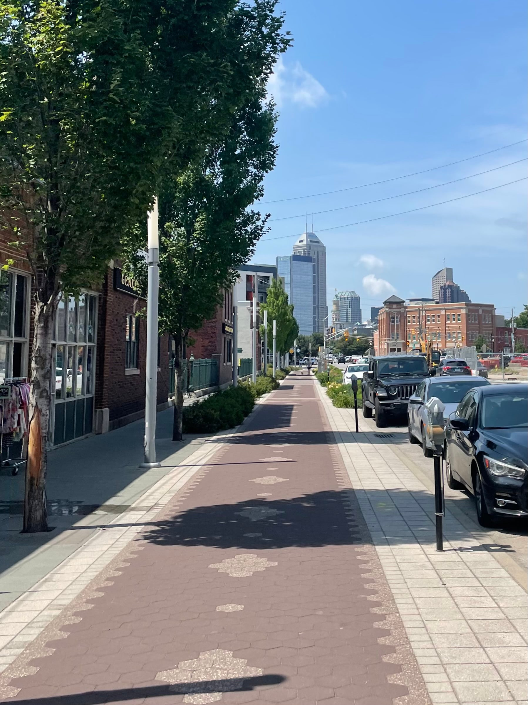
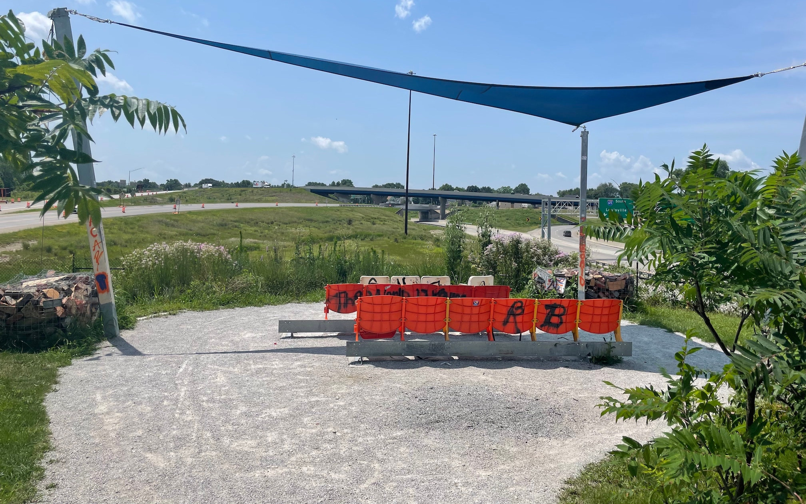
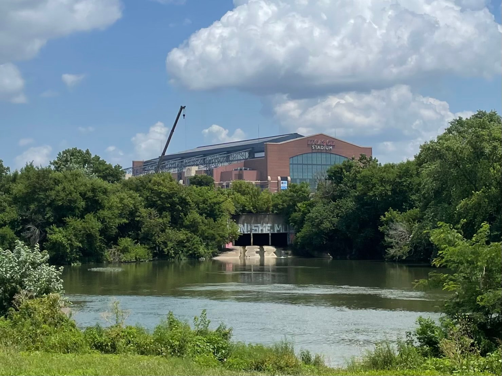

I went to Vermont a couple years ago, and it struck me as the whitest place I’d ever been. Sitting here writing this today, I think the areas around the Monon Trail beat it. Vermont is aspirationally white. They have Ben & Jerry’s, and both Ben and Jerry are good people who give to and fight for good causes. They ride bikes and buses and generally keep fit. They recycle. The northern outskirts of Indianapolis, through which the Monon Trail runs, is mostly farmland. Some grain silos displayed words and imagery aligning the owners to a certain side of the political spectrum. Everyone was driving a truck. All the fellas had the kind of facial hair that grows from not having time to maintain it.
This was my first ride since getting vaccinated. And of course I didn’t stop to ask everyone I passed their vaccination status, I simply assumed they were. Either way, it was the first time I wasn’t wearing a mask and neither was anyone else. It was a proud return to the most white of gestures, passing each other on a recreational trail and giving the kind of tight closed-mouth smile that makes both your lips disappear. I think we do this because deep down we know we’re frauds, and it scares us. You hear on nature shows that canines, territorial apes, I don’t know, freak fish, all show their teeth as a warning. We sacrifice what little of our lips we have to hide our teeth, because despite any outward show of strength, we’re scared of confrontation. It would be all too fitting that my day would end on the White River Trail.
 But before then, the first five miles or so were exquisitely smooth asphalt through endless rows of corn and soybeans. The Monon trails continued through the suburbs (sliding back toward Vermont on the white spectrum): outdoor recreational facilities, classy strip malls, and endless rows of identical townhouses. All the while, impeccably maintained and effortless to push. At some point, the Monon transitioned from a purpose-built trail to a converted rails-to-trail, so the path got a little narrower, the pavement got a little rougher, and the scenery got a little less scenic. But still a protected lane, separate from traffic, weaving through quirky neighborhoods like Broad Ripple with its rainbow bridge.
But before then, the first five miles or so were exquisitely smooth asphalt through endless rows of corn and soybeans. The Monon trails continued through the suburbs (sliding back toward Vermont on the white spectrum): outdoor recreational facilities, classy strip malls, and endless rows of identical townhouses. All the while, impeccably maintained and effortless to push. At some point, the Monon transitioned from a purpose-built trail to a converted rails-to-trail, so the path got a little narrower, the pavement got a little rougher, and the scenery got a little less scenic. But still a protected lane, separate from traffic, weaving through quirky neighborhoods like Broad Ripple with its rainbow bridge.
Kind of all of a sudden, the Monon Trail hit the big city of Indianapolis and gave way to its Cultural Trail that zig-zags through downtown. This trail is an extra wide sidewalk lane, set in brick instead of concrete, and frequently decorated with glyphs of people biking, walking, rollerblading, never skateboarding. And if its name is to be believed, judging by the businesses with front doors along its path, Indianapolis has a rich cultural history of microbreweries and CBD shops. Of course, being the state capital, there are also beautiful regal government buildings, and more than a fair share of curiosities.
At one point, the Cultural Trail cuts into a city block, away from the sidewalk and the street, to run down a back alley where restaurants would usually take their garbage. An art installation in this particular back alley named Chatham Passage pumps the aroma of roses instead. Of course, it looks like a very fancy sewer grate, so the first time I passed I literally did not take the time to stop and smell the roses. When I returned hours later, I honestly still couldn’t really smell anything. Cool idea regardless.
As the Cultural Trail passes over the intersection of two major interstate highways, a discreet sign beckons the pedestrian to venture into a small thicket and take a rest. After a brief winding trail surrounded by vegetation, you reach The Idle, a small park with an elevated view of the constant motion of highway traffic. Take a breather in some reclaimed stadium seats. Why not.
The Cultural Trail will lead you all the way out of downtown, into Indianapolis’ historic (read: more diverse, both in terms of race and class) outer neighborhoods. There is still a network of riverside trails here that will take you back up toward downtown. First up was the optimistically named Pleasant Run Trail. My time with it was cut short by bridge and road construction, so I took to a regular sidewalk before hopping onto the White River Trail and working my way north again. There are plenty of highlights, perhaps the old Washington Street bridge over the White River, linking a big park containing the city zoo and the part of downtown with museums and the NCAA headquarters, and closed off to all car traffic. For me, it was seeing the outflow of Pogue’s Run, a creek that they built the whole city on top of. From the trail, it looked like it came directly out of Lucas Oil Stadium, some kind of runoff metaphor for the post-Peyton Colts.
I crack wise, but there was a lot more to Indianapolis than I was ready to give credit for. Within skateboarding distance, there are gigantic city buildings, hipster neighborhoods, suburbs, sprawling farms, and what some might call rougher areas. Not to mention a tree on the capitol grounds, sprouted from a seed that went to the moon and back.